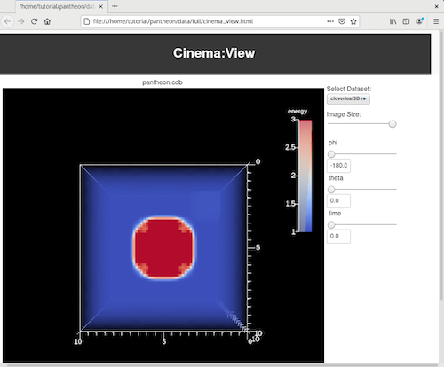
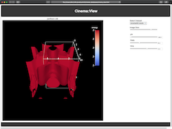

10. Changing the visualization
The in-situ visualization in this workflow is managed by Ascent, which
looks for a vis definition in the
ascent_actions.yaml
file. Therefore, executing with a different
ascent_actions.yaml file will
change the visualization that is output to the cinema database.
To change the visualization, copy a different file to the run directory:
pushd ~/pantheon/tutorial/inputs/ascent
cp ascent_actions_iso.yaml ascent_actions.yaml
popd
|  |
 |
| Original visualization |
Isosurface visualization |
You can also edit the
ascent_actions.yaml file to
change the number of images that are written out, by changing the values for the following variables. This will increase the runtime of the workflow, so only change them if you're OK with a longer run time:
phi controls the number of positions around the vertical axis.theta controls the number of positions around the horixontal axis.
-
action: "add_scenes"
scenes:
s1:
plots:
p1:
type: "volume"
field: "energy"
min_value: 1
max_value: 3
renders:
r1:
image_width: 512
image_height: 512
type: "cinema"
phi: 1
theta: 1
db_name: "pantheon.cdb"